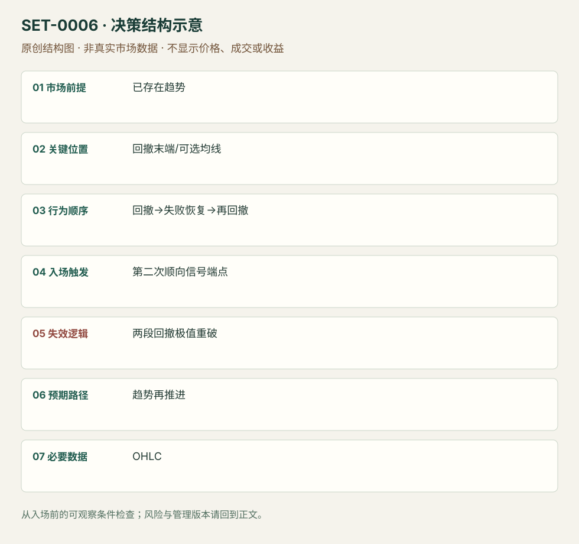

趋势中的两段回撤第二次入场
High 2 / Low 2 Two-Legged Pullback · SET-0006 · reviewed · v1.0.0
盈利证据：not_established。审查范围与来源版本见第13节；未知字段保留缺失原因。
1. 名称与快速概览
已形成方向趋势，回撤第一次恢复趋势未能持续，随后第二段回撤结束，才通过顺趋势信号考虑加入。回撤极值被穿透说明本次恢复失败。
记录口径：PA core；必要数据 OHLC、EMA_optional。名称性质：编辑性描述名，英文保留来源术语以便检索。reviewed 只表示本条规则与证据记录审查通过，盈利状态为 not_established。
2. 本质与行为假说
可见的是两段反向摆动之间一次失败的恢复。Brooks/Galen解释为反趋势与过早顺趋势参与者被困；Grimes用复杂回撤描述同一序列。这里不是机械数两根阴线。
3. 适用市场与环境
需要事前已有较少重叠、连续推进的趋势。EMA20是Galen的参考位置版本；在频繁穿越均线的平衡段，两段回撤本身不产生方向优势。
来源实用市场：ES期货5分钟、SPY ETF 3分钟。
Session：美股/ES现金参考段 09:30–16:00 America/New_York；收盘前平仓。期货夜盘单独建背景，不将其并入开盘区间。
跨市场：本版不主张已经验证的跨市场迁移；更换市场必须重定数据来源、流动性与session。
4. 出现前的观察清单
必要：方向背景与两段可分开的回撤；先前趋势极值未被实质破坏。增强：第二段接近EMA/旧支撑且有拒绝。否决：仅凭两根逆色柱计数、回撤已变宽平衡。
5. 形成过程与状态转换
趋势推进→第一回撤→恢复失败→第二回撤→顺向信号柱→越过信号柱→管理。若第二段出现新的强反趋势推进，取消。
6. Entry trigger 与执行方式
Galen MA版本在测试20EMA的信号柱高/低外一tick用触发单。普通H2不必刚好摸均线；固定规则时需标明版本。信号柱尚未收盘的抢入与完成后触发分别记录。
7. Invalidation 与止损逻辑
保护回撤摆动极值而非只保护最后小柱；第二段被突破后趋势仍可能最终恢复，但本次结构止损可正常亏损。固定tick数不是定义。
8. Exit、target 与 trade management
先看事前趋势极值与第二段推进；强趋势可留部分按新摆动退出。弱跟随或重叠增加时降低延续期待。目标与时间退出是研究管理模块。
9. 常见 variations
H2/L2多空、嵌套大小与EMA版本合并。三段楔形回撤的额外失败次数若专门研究，需证明不同，不在本版重复计。
10. 失败方式与不交易条件
正常亏损：第二尝试后仍穿回撤极值。未成立：把区间交替摆动当强趋势。偏离：第一尝试即入而记为H2。图中亏例本身仍满足表面两段，不事后删除。
11. 与相近 setups 的区别
12. 图表与案例解读
已查看Galen的赢例与亏例。赢例先有均线拒绝和强下推，再两段回升；亏例虽有连续较高低点，但夹有空头柱，后续买入止损。图头5/12/2013与6/12/2013格式存在月/日歧义，保留原写法不转换ISO日期。
- [VIS-000005] Two-Legged Pullback Moving Average Winning Trade；定位：Winning Trade - M2S。黑圈是前期均线拒绝，红箭头是两段回升末端。 验证：chart_viewed。
- [VIS-000006] Two-Legged Pullback Moving Average Losing Trade；定位：Losing Trade - M2B。绿色箭头后的合格表面信号没有持续；提醒不能把胜例背景当事后过滤。 验证：chart_viewed。


本地原创示意（VIS-000063，非真实市场数据）：

小屏阅读可打开原尺寸示意图并缩放。

此图用于对照识别顺序与风险定义；不计入真实案例覆盖率。
视觉材料元数据与查看范围
- VIS-000005 · real_source_chart / structure_and_trigger / chart_viewed
品种：ES 12-13；日期：未知/不适用；周期：5分钟；时区：未知/不适用
日期未在图中核对；时区未在图中核对；来源图表不是成交审计 - VIS-000006 · real_source_chart / structure_and_trigger / chart_viewed
品种：ES 12-13；日期：未知/不适用；周期：5分钟；时区：未知/不适用
日期未在图中核对；时区未在图中核对；来源图表不是成交审计 - VIS-000063 · synthetic_structure_diagram / illustration_only / generated_not_market_evidence
品种：未知/不适用；日期：未知/不适用；周期：未知/不适用；时区：未知/不适用
无真实品种、日期或价格：这是结构示意
13. 证据、分歧与未知项
Brooks起源经Galen复述，不把它当新的独立起源；Grimes独立解释复杂回撤。同一逻辑也叫M2，与H2合并，不把来源“高概率”措辞当可测结论。
- [EVD-000008] Galen Woods，《Two-legged Pullback to Moving Average (M2B, M2S)》，SRC-0015；定位：Trading Rules、Winning M2S、Losing M2B。支持：强趋势中两段回撤至EMA，信号柱端点外触发；横盘背景有失败例
- [EVD-000009] Adam Grimes，《Fundamental Trading Patterns》，SRC-0017；定位：Complex Pullback。支持：第一次恢复趋势失败，再次回撤后第二次恢复趋势
审查边界：来源份数与独立核心核验分开；当前类别为 independent_context_only。正文中的概念、官方事实、衍生解说或同族资料只按其支持范围使用。
14. 可用于复盘的检查表
- ☐ 下单前的前提可核对：已存在趋势
- ☐ 事前标记位置：回撤末端/可选均线
- ☐ 行为按顺序出现：回撤→失败恢复→再回撤
- ☐ 实际触发符合选定版本：第二次顺向信号端点
- ☐ 事先写明本次否定条件：两段回撤极值重破
- ☐ 目标/路径只用当时已知信息：趋势再推进
- ☐ 数据满足 OHLC；记录时间、点差、滑点、队列和未成交
- ☐ 记录截止平仓及规则偏离；正常亏损不事后改成“未成立”
15. 后续验证问题
固定摆动分段规则并保留所有不清楚计数；对两段与一段回撤作同背景对照，测成本和错过强趋势的机会代价。
双向相关导航
- SET-0009 强推进后的首次微型回撤 微通道第一次回撤之前没有正常回撤；本条必须已有第一次恢复失败。
- SET-0015 缩量普通回撤后的成交恢复 缩量回撤需要量能退潮，不要求两次恢复；本条必须两段。
- SET-0017 逆趋势实体柱试探失败后的顺势入场 H2要求两段回撤；本条不数两段，只检验逆向柱是否获得跟随。
- SET-0018 平衡区间边缘的第二次反向信号 H2依据既有单向趋势恢复，本条依据已经出现双向平衡并预期中部。
- SET-0019 原始顺势信号止损后快速恢复的延迟入场 H2只要求首次恢复失败，本条必须典型触发已发生且对应模式止损被穿。